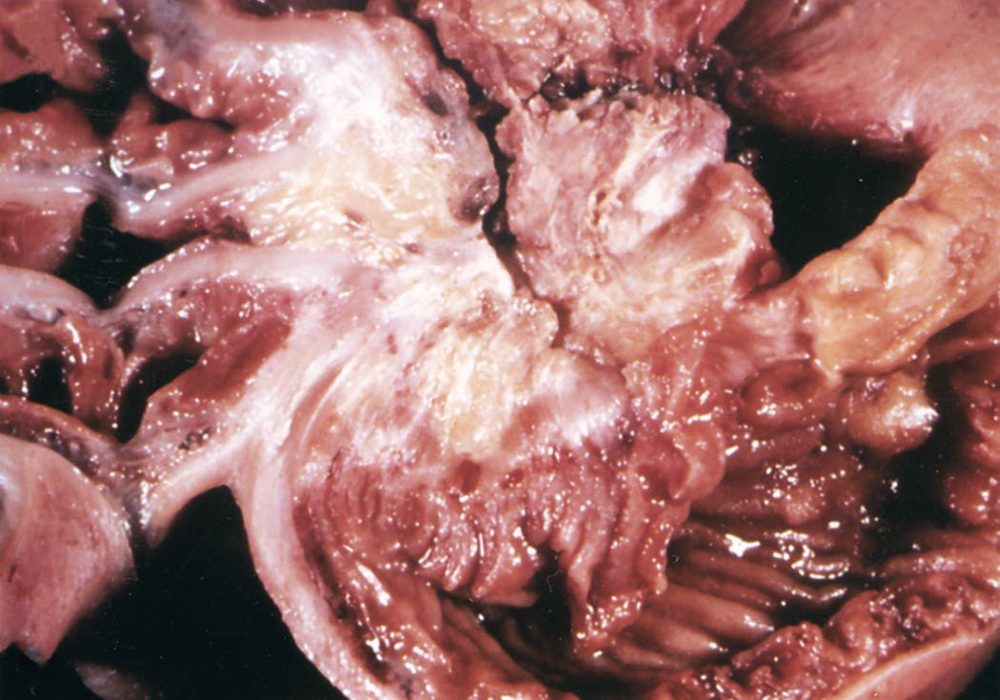
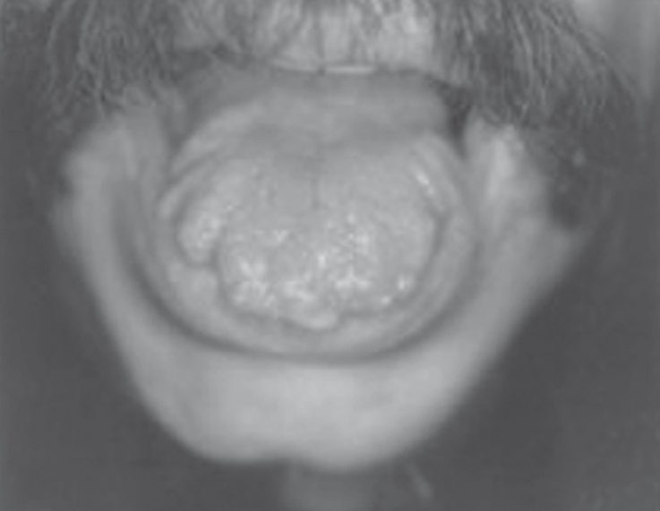
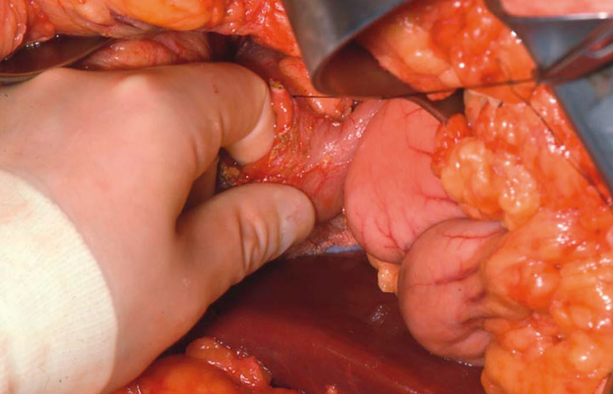
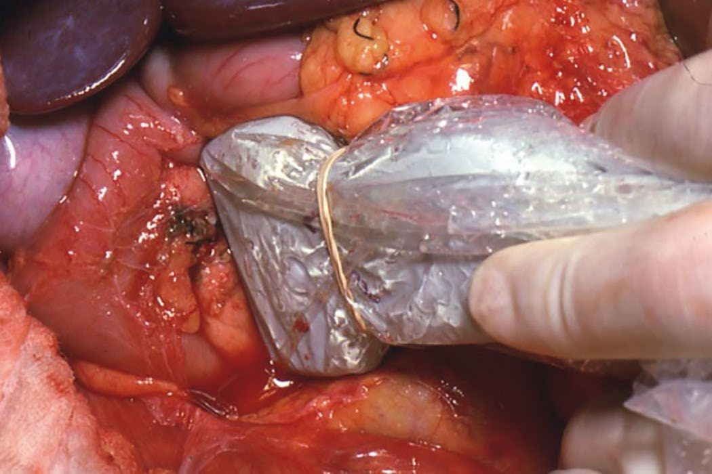

Neuroendocrine Tumors and MEN Syndromes
Summary
- Neuroendocrine tumours (NETs) arise from diffuse neuroendocrine (APUD) cells found throughout the gut, pancreas and elsewhere, and can be sporadic or occur as part of multiple endocrine neoplasia (MEN) syndromes [1][2].
- They are rare but increasing in incidence, with an annual age-adjusted incidence of 6.98 per 100,000 persons in 2012 and a median age at diagnosis of 60.5 years; the majority occur in the gastrointestinal tract and are classified by embryological site of origin as foregut, midgut or hindgut [3].
- Pancreatic neuroendocrine tumours (PNETs) are increasingly diagnosed incidentally; the majority are nonfunctional, and surgical resection remains the mainstay of treatment for localised disease [4].
- Small intestinal NETs, formerly carcinoid tumours, can produce carcinoid syndrome when hepatic or extra-portal metastatic burden overwhelms hepatic serotonin metabolism [5].
- MEN1, MEN2A, MEN2B, and MEN4 are autosomal dominant syndromes combining tumours of the parathyroid, pancreas and duodenum, pituitary, thyroid and adrenal medulla, each requiring coordinated screening and surgical planning [2][6].
UK practice in gastroenteropancreatic NETs is set by the UKINETS guidelines, Guidelines for the management of gastroenteropancreatic neuroendocrine (including carcinoid) tumours, produced by the UK and Ireland Neuroendocrine Tumour Society and endorsed by the clinical committees of the British Society of Gastroenterology, the Society for Endocrinology, the Association of Surgeons of Great Britain and Ireland and its specialty associations, and the British Society of Gastrointestinal and Abdominal Radiology [7]. NICE contributes only two technology appraisals covering systemic therapy for advanced disease [8][9].
Two absences are worth recording. NG12, the suspected cancer referral guideline, contains no recommendation on neuroendocrine tumours at all, there is no NET referral trigger to quote, which matters given the UKINETS observation that diagnosis is delayed by up to 7 years from first symptoms [7]. And there is no NICE guideline on the MEN syndromes.
The guideline's own framing of its evidence base is worth carrying: there remain few randomised trials in the field and the disease is uncommon, "hence all evidence must be considered weak in comparison with other more common cancers" [7].
Definition
- Neuroendocrine cells (APUD cells) share amine precursor uptake and decarboxylation capability and a common neuroendocrine differentiation programme; they are found scattered through the GI tract, pancreas (islet cells) and thyroid (C cells), constituting the diffuse neuroendocrine system [1].
- PNETs are tumours of the pancreatic neuroendocrine cells, classified as functional (producing a hormone excess syndrome) or nonfunctional [4].
- SI-NETs (carcinoid tumours) arise from enterochromaffin cells at the base of the crypts of Lieberkühn [5].
- MEN syndromes are rare autosomal dominant familial conditions affecting multiple endocrine organs, with neoplasms developing synchronously or metachronously [2][6].
- The term carcinoid is now regarded as a misnomer.
- It implies benignity, and given the propensity of these tumours to metastasise, neuroendocrine tumour has replaced it [3].
- The majority of NETs are 'nonfunctioning', meaning that they do not secrete metabolically active substances such as gastrin, serotonin, insulin or vasoactive intestinal peptide; GI tract NETs are generally not associated with hormone hyperproduction but can cause carcinoid syndrome, especially where there are metastases, whereas bronchopulmonary and thymic NETs can cause both carcinoid syndrome and Cushing's syndrome [3].
The clinical diagnosis of MEN1
Around 10% to 20% of individuals with MEN1 have no identifiable mutation, so the diagnosis can be made clinically in a patient with two or more MEN1-associated tumours, or in a patient with one MEN1-associated tumour and a first-degree relative with MEN1 [10]. Germline mutations of CDKN1B produce parathyroid adenomas, pituitary adenomas and PNETs (the syndrome known as MEN4) and given its clinical similarity to MEN1, MEN4 may account for some of those who meet clinical criteria for MEN1 but lack a MEN1 mutation [10].
Pathophysiology
- MEN1 results from mutation in the MEN1 gene on chromosome 11q13, encoding menin, a histone methyltransferase and cell-cycle regulator acting as a tumour suppressor; it produces the syndrome of the 'three Ps', parathyroid (hyperplasia, nearly 100% penetrance by age 40), pituitary (15–40%, most commonly prolactinoma) and pancreas (PNETs in 30–80% depending on series) [4][6][11].
- Germline inactivation of one MEN1 allele plus somatic mutation of the other drives development of multiple pancreatic neuroendocrine microtumours; nearly 100% of MEN1 patients develop pancreatic microadenomas under 0.5 cm by age 50, larger tumours in about 75%, with around half developing gastrinomas and 20% insulinomas [4].
- MEN1 affects male and female patients equally with no specific racial association, and if left untreated, patients with MEN1 have a 50% probability of death by 50 years of age [10].
- The parathyroid disease, often characterised as four-gland hyperplasia, is in fact multiple parathyroid adenomas in separate glands [10].
- Browse's records MEN1 from the parathyroid end: hyperparathyroidism may be the presenting feature of MEN1 before other components, pituitary adenomas, growth hormone excess, prolactinoma, gastro-entero-pancreatic neuroendocrine tumours (insulinoma, gastrinoma, glucagonoma, pancreatic polypeptide tumour, VIPoma) and adrenocortical adenoma, become evident [12].
- MEN2A and MEN2B arise from RET proto-oncogene mutations on chromosome 10; MEN2A comprises medullary thyroid carcinoma (approximately 100%), phaeochromocytoma (10–60%) and hyperparathyroidism (5–20%), while MEN2B comprises MTC, phaeochromocytoma (up to 50%), mucosal and gut neuromas with ganglioneuromatosis, and marfanoid habitus, without hyperparathyroidism [2][6].
- Sabiston sets out the genetics in detail: the RET proto-oncogene at 10q11.2 codes for a tyrosine kinase membrane receptor with an extracellular ligand-binding domain, a transmembrane domain and a cytoplasmic tyrosine kinase domain, and the mutations causing MTC are gain-of-function missense mutations [10].
- Unlike other receptor tyrosine kinases, RET activation occurs through a multiprotein ligand complex rather than direct receptor-ligand interaction, and activation causes dimerisation, promoting cell signalling, differentiation, growth and survival [10].
- RET is expressed in multiple neural crest tissues, thyroid C cells, parathyroid glands, adrenal chromaffin cells, enteric ganglia, and peripheral and central neurons, and mice with mutated RET have renal agenesis and lack neurons throughout the digestive tract, suggesting a role in renal and neuronal development; inactivating, loss-of-function RET mutations cause Hirschsprung disease [10].
- Crucially, unlike MEN1, strong genotype-phenotype correlations exist in MEN2, and specific mutations predict the onset and aggressiveness of the disease, which is what makes prophylactic thyroidectomy possible [10].
- Familial medullary thyroid carcinoma is a milder RET-associated phenotype with MTC only [2].
- Von Hippel–Lindau disease is autosomal dominant, arising from failure of VHL protein to degrade hypoxia-inducible factor, causing PNETs in around 20% of patients (Type I VHL, truncating mutations, 10% PNET risk; Type II, missense mutations, up to 40% PNET risk) plus CNS and retinal haemangioblastomas, renal cysts and carcinoma, phaeochromocytoma and endolymphatic sac tumours [1][4].
- Tuberous sclerosis (TSC1/TSC2 mutations) and neurofibromatosis type 1 are also associated with PNETs, at 1% and about 10% respectively, both acting through loss of inhibition of mTOR signalling [4].
- Sporadic PNETs commonly show mutations in MEN1 (about 44%), mTOR-pathway genes such as PTEN, TSC1/2 and PIK3CA (about 15%) and DAXX/ATRX (about 43%); DAXX/ATRX loss or alternative lengthening of telomeres positivity confers a worse prognosis [4].
- Most well-differentiated PNETs, about 90%, highly express somatostatin receptors, which is exploited for imaging (DOTA-PET) and therapy (somatostatin analogues, peptide receptor radionuclide therapy) [4].
Carcinoid syndrome
- Carcinoid syndrome results when vasoactive amines (serotonin, histamine, kallikrein, bradykinin, prostaglandins) from a NET reach the systemic circulation without first-pass hepatic metabolism by monoamine oxidase; this occurs when hepatic metastatic burden exceeds hepatic clearance capacity, or where tumours drain outside the portal system, as with bronchial or retroperitoneal primaries [5].
- Cardiac manifestations occur in 60–70% of advanced disease from tricuspid and pulmonary valve endocardial fibrosis, attributed to high circulating 5-HIAA [5].
- Sabiston adds that serotonin causes systemic vasodilatation as well as fibrosis formation, and gives the frequencies of the individual cardiac lesions as pulmonary stenosis 90%, tricuspid insufficiency 47% and tricuspid stenosis 42% [3]. Atypical carcinoid syndrome is typically mediated by histamine, and is rarely produced by type III gastric NETs, presenting with flushing that is extremely red, patchy or pruritic [3].

Gastric NETs: three types with three mechanisms
Gastric NETs comprise about 7% of all digestive NETs, arise from the histamine-containing enterochromaffin-like cells of the embryonic foregut, and are rare among gastric neoplasms at about 1.8%, with an incidence of 0.5 per 100,000 persons [3]. Their three subtypes have entirely different mechanisms and prognoses [3]:
| Type | Prevalence | Mechanism | Size and behaviour | Gastric pH and gastrin | Association |
|---|---|---|---|---|---|
| Type I | 70–80% | Loss of parietal cells and chronic atrophic gastritis causing G-cell hyperplasia and hypergastrinaemia from lack of inhibitory feedback, upregulating ECL cells | Small, 1 cm or less, multiple, usually benign; fundus or body | High pH (over 4–7), high gastrin | Pernicious anaemia |
| Type II | 5% | Ectopic gastrin-producing G cells (gastrinoma) in duodenum or pancreas driving hypergastrinaemia independent of normal feedback | Larger than type I, malignant potential, nodal metastasis 5–35% | High gastrin | MEN1 and Zollinger–Ellison syndrome |
| Type III | 15–25% | No hypergastrinaemia and no aberrant gastric physiology | Large, highly aggressive, metastasise to nodes then liver | Normal gastrin | Atypical carcinoid syndrome from 5-hydroxytryptophan overproduction |
Table reformats the characteristics of the three types of gastric neuroendocrine tumour [3]. Type III carries an impaired 5-year survival of 25% to 30% against 70% to 99% for the other types, and a diagnosis of type II mandates screening for MEN1-associated pituitary and parathyroid tumours [3].
Clinical features
- MEN1 hyperparathyroidism is usually the first manifestation and is typically asymptomatic, with urinary symptoms if any; gastrinomas cause the major morbidity of the syndrome (50% multiple, 50% malignant) and prolactinoma is the commonest pituitary tumour [2].
- Compared with the sporadic form, MEN1-related primary hyperparathyroidism presents at an earlier age, with an equal male-to-female ratio, and with greater severity of bone and renal involvement [10].
- Historically, peptic ulcer disease from Zollinger–Ellison syndrome caused significant morbidity (bleeding, perforation, fistula) and complications of hypersecretion were the main cause of death in MEN1 patients with ZES, until H2 receptor antagonists and proton pump inhibitors made acute and chronic control of acid hypersecretion possible in most patients [10].
- MEN2A and MEN2B: MTC is usually the first manifestation, presenting with diarrhoea as the most common symptom, often from bilateral multifocal disease, and is the number one cause of death in these patients; phaeochromocytoma is often bilateral and rarely malignant in MEN2, at 3–5% [1][2].
- Browse's summarises the components: common features of MEN2A are phaeochromocytoma and primary hyperparathyroidism alongside MTC, and of MEN2B are phaeochromocytoma, mucosal neuromas of the tongue, lips and conjunctivae, pale-brown birthmarks, gastrointestinal complaints such as constipation, and a marfanoid habitus [12].
- It is important to exclude a phaeochromocytoma once a diagnosis of medullary carcinoma has been made, and patients with medullary carcinoma are offered genetic screening [12].
- MEN2A is associated with phaeochromocytoma and hyperparathyroidism, whereas MEN2B is associated with phaeochromocytoma, marfanoid habitus and mucocutaneous ganglioneuromas [14].

The four MEN2A subclassifications
MEN2A comprises 95% of MEN2 cases, and MTC develops in nearly 100% of patients, with phaeochromocytoma in 30% to 50% and primary hyperparathyroidism in 5% to 15%; the degree of penetrance of each tumour type is associated with specific codon mutations [10]. It has four subclassifications [10]:
| Subtype | Distinguishing feature | MTC | Phaeochromocytoma | Primary hyperparathyroidism |
|---|---|---|---|---|
| Classical MEN2A | The default phenotype | Nearly 100% | 30–50% | 5–15% |
| MEN2A with cutaneous lichen amyloidosis | Pruritus, with repeated scratching depositing amyloid in the papillary dermis, producing plaques often on the back; typically codon 634 | 95% | 50% | 5% |
| MEN2A with Hirschsprung disease | Codons 609, 618 or 620; nearly 20% of these kindreds have Hirschsprung disease, which affects about 7% of MEN2A patients overall | 77% | 17% | 3% |
| Familial medullary thyroid carcinoma | A RET mutation in families with MTC and no history of phaeochromocytoma or hyperparathyroidism; codons 533, 768, 804 | All patients, but diagnosed in the mid-40s, about 20 years later than in MEN2A | Not by definition, though the variants can cause it | Not by definition, though the variants can cause it |
- Table reformats the MEN2A subclassifications and the penetrance of each tumour type [10].
- The distinction between classical MEN2A and familial MTC is not always clean, because many of the common variants are able to cause phaeochromocytoma or hyperparathyroidism [10].
- Hirschsprung disease occurring outside MEN2A arises from inactivating RET mutations, and patients with MEN2A should be counselled about the possibility of the disease in their offspring [10].
MEN2B
- Approximately 5% of MEN2 cases are MEN2B; MTC is again the hallmark and about 50% develop phaeochromocytomas [10].
- The characteristic appearance is elongated facies, marfanoid body habitus, ophthalmological and skeletal abnormalities such as pectus excavatum and scoliosis, and mucosal neuromas of the lips and tongue; ganglioneuromatosis throughout the gastrointestinal tract contributes to oesophageal dysmotility, abdominal bloating, intermittent constipation and diarrhoea [10]. MEN2B often develops in infancy and tends to be aggressive with early metastasis.
- The majority have germline mutations in exon 16, codon M918T, with under 5% having codon A883F; MTC is the cause of death in approximately 65% of patients with the M918T variant, while A883F may produce a milder, less aggressive form [10].
Functional pancreatic tumours
- Insulinoma classically presents with the Whipple triad, hypoglycaemic symptoms (sweating, tremor, blurred vision, confusion, seizures) during fasting or exercise, biochemical hypoglycaemia, and symptomatic relief with restoration of normoglycaemia [4].
- Gastrinoma (Zollinger–Ellison syndrome) presents with severe reflux, diarrhoea and recurrent ulceration of the stomach, duodenum or upper jejunum; suspicion should be high in patients with recurrent ulcers, multiple ulcers in atypical locations, ulcers failing to respond to usual therapy, or ulcers in the setting of primary hyperparathyroidism [4][10].
- Glucagonoma presents with necrolytic migratory erythema, glossitis, cheilitis, hyperglycaemia, weight loss and thromboembolism, with severe protein wasting in symptomatic patients [4].
- VIPoma (Verner–Morrison or WDHA syndrome) causes profuse watery diarrhoea of 6–8 L/day with hypokalaemia, achlorhydria, hypercalcaemia and flushing, and can cause fatal arrhythmias from electrolyte loss [4].
- Somatostatinoma causes diabetes, diarrhoea or steatorrhoea, and cholelithiasis [4].
- Pancreatic polypeptidoma produces no clinical syndrome and tends to present late, large, with mass effect [4].
- Nonfunctional PNETs are often silent until advanced, presenting with mass effect (obstructive jaundice, duodenal obstruction, early satiety) or with liver metastases; more than half have metastasised to nodes or liver at diagnosis [4].
Luminal and thoracic NETs
- SI-NETs most commonly present with abdominal pain, often from intussusception where a polypoid lesion acts as a lead point, with symptoms sometimes present for 2–20 years before diagnosis; carcinoid syndrome is the presenting feature in 40% [5].
- Carcinoid syndrome attacks feature flushing (80% of patients, lasting 5–10 minutes, precipitated by stress, alcohol, large meals or intercourse), watery diarrhoea, abdominal cramps and malabsorption [5].
- Sabiston's figures for carcinoid syndrome overall are episodic skin flushing in over 90%, lower-limb oedema, diarrhoea in 60% (often watery, postprandial and explosive) and wheezing or exertional dyspnoea in 15%, with the syndrome occurring in 10% to 30% of carcinoid cases [3].
- In advanced stages, mesenteric and nodal involvement may obstruct venous drainage and lead to ischaemia, and a dense desmoplastic reaction may exacerbate small bowel obstruction [3].
- Colorectal NETs appear on endoscopy as small, yellowish, waxy-looking sessile or submucosal polyps; they rarely produce serotonin, which limits the usefulness of 24-hour urinary 5-HIAA, but may secrete somatostatin, and fewer than half produce symptoms, bleeding or a change in bowel habit [3].
- Bronchopulmonary NETs usually present as centrally located endobronchial lesions but may be peripheral nodules, and may secrete serotonin, ACTH, somatostatin and bradykinin; bronchial obstruction causes lung hyperinflation, atelectasis and recurring pneumonia distal to the obstruction [3].
- Their symptom frequencies are cough 35–91%, dyspnoea 46%, chest pain 40%, haemoptysis 25–50%, recurrent lung infections 33%, carcinoid syndrome 1–5%, Cushing's syndrome 2–4%, and asymptomatic 25% [3].
- Thymic NETs make up about 5% of anterior mediastinal tumours, have a strong male predominance, are associated with MEN1, generally present as a large mass often locally invasive or with distant metastasis, and although mostly non-secretory can produce ACTH; patients often present asymptomatically with a mass on imaging, or with chest pain, cough and dysphagia from mediastinal mass effect [3].
Etiology
- MEN1 occurs in approximately 1 per 30,000 individuals, with over 1000 identified MEN1 gene mutations across families [11].
- The prevalence of MEN2A and MEN2B is approximately 20 and 2 per million respectively, with incidences of 8 to 28 and 1 to 3 per million live births [10].
- MEN4 is rarer still, with approximately 80 cases identified in the literature and an estimated prevalence under one per million; patients present at an older age with milder clinical features than MEN1, most often with primary hyperparathyroidism in over 90% of cases as the first manifestation at a mean age in the fifth decade, and approximately 40% have pituitary involvement [10].
- Of hereditary PNET syndromes, MEN1 is most common (PNET risk 60–80%), followed by VHL (5–40% depending on mutation type), with NF1 (0–10%), tuberous sclerosis (1%) and Cowden syndrome (case reports only) much rarer [4].
- Among unselected PNET patients, 6% have a known hereditary syndrome overall, rising to 16% in those diagnosed before age 50 [4].
- Insulinoma incidence is 1–4 per million per year; gastrinoma 1–1.5 per million per year, of which 20–30% are MEN1-associated; glucagonoma about 1 per 10 million; VIPoma 0.05–0.2 per million per year; somatostatinoma 0.01–0.05 per million per year [4].
- Around 7% of insulinoma cases are associated with MEN1 [10].
- Conversely, 20% of patients with gastrinomas have MEN1, and approximately 50% of functional enteropancreatic NETs in MEN1 are gastrinomas [10].
- Enteropancreatic NETs are the second most common tumour type in MEN1, occurring in 55% to 70% of patients [10].
- Bronchial and thymic NETs occur in up to 25% of MEN1 patients, more often in males with reports of a 10:1 male-to-female predominance, and smoking is a risk factor for thymic NETs in this group [3].
- SI-NETs represent 5–35% of small bowel neoplasms; the appendix is the commonest GI site overall for a primary NET, though 30% of SI-NETs arise in the jejunum or ileum with the most aggressive behaviour [5].
- Tumour size correlates directly with metastatic risk in SI-NETs: under 1 cm carries 20–30% nodal and hepatic spread, 1–2 cm carries 60–80% nodal and 20% hepatic spread, and over 2 cm carries over 80% nodal and 40–50% hepatic spread [5].
- Appendiceal NETs are the most common neoplasm affecting the appendix at 60–80%, with lymph node metastasis rates rising with size (15% under 1 cm, 47% at 1 to 2 cm, and 86% above 2 cm) and appendiceal tumours present earlier than intestinal NETs elsewhere because they obstruct the appendiceal lumen and cause appendicitis, so many are diagnosed incidentally on final pathology, at a prevalence of about 1% to 1.5% of appendicectomy specimens [3].
- Colonic NETs make up 16% of GI NETs and rectal NETs 34%; colonic NETs are rare but aggressive, with 40% high grade, an average size of 5 cm and over 65% having nodal or distant metastases [3].
- Pancreatic NETs are rare among NETs at 9%, but carry the worst overall 5-year survival of any NET site at 74% across all stages [3].
- Bronchopulmonary NETs have an age-adjusted incidence of 1.49 per 100,000, develop mostly spontaneously in the fifth and sixth decades, and represent less than 2% of lung tumours; cigarette smoking is associated with increased odds of developing them, though the mechanism is unclear [3].
The UK guideline gives its own epidemiology, which differs from the American figures above in emphasis rather than substance, and adds several facts with direct bearing on practice.
Early UK, Swedish and Swiss data suggested an incidence of gastrointestinal NETs between 2 and 3 per 100,000 persons per year with a slight female preponderance; the overall incidence of NETs in Caucasians is 4.44 per 100,000 per year in the USA and 3.24 in Norway, higher than previously thought but in keeping with Swedish autopsy studies from 30 years earlier [7]. Despite the rising number of cases, there is still a delay of up to 7 years between the appearance of first symptoms and a diagnosis of NET [7]. Because many NETs are slow-growing or of uncertain malignant potential, and even malignant ones are associated with prolonged survival, the prevalence is relatively high [7].
Risk factors that the guideline identifies and, equally usefully, rules out: there is an increased risk in patients with atrophic gastritis and in persons of Afro-Caribbean origin; US evidence links a long-term history of diabetes mellitus, especially combined with a family history of cancer, to gastric NET risk; and a history of smoking or alcohol use has no apparent effect on the risk of developing a NET [7]. Small intestinal NETs are 30% more common in men than women [7].
The nodal metastasis figures are more useful than the size-based rules because they are site-specific. For a small bowel primary the likelihood of nodal metastases at diagnosis is about 60% irrespective of the precise site within the small bowel; with a colonic primary it is about 40–70%, higher in the ascending colon and lower in the rectum; nodal metastases are present in 5% of appendiceal primaries and 15% of pulmonary primaries; and the chance of liver metastases at diagnosis is about half the risk of nodal spread [7].
- Carcinoid syndrome occurs in about 20% of well-differentiated jejunal or ileal (midgut) NETs and consists of usually dry flushing without sweating in 70% of cases, with or without palpitations, diarrhoea in 50% and intermittent abdominal pain in 40%, with lacrimation and rhinorrhoea in some patients; it occurs less often with NETs of other origins and is very rare with rectal NETs [7].
- It is usually due to hepatic metastasis, but may also occur in the absence of liver metastases if there is direct retroperitoneal involvement with venous drainage bypassing the liver [7].
- Carcinoid heart disease is present in about 20% of patients at presentation and usually indicates that the syndrome has been present for several years [7].
Carcinoid crisis is characterised by profound flushing, bronchospasm, tachycardia and widely and rapidly fluctuating blood pressure, thought to be due to release of mediators producing high levels of serotonin and other vasoactive peptides; it is usually precipitated by anaesthetic induction for any operation, by intraoperative handling of the tumour, or by other invasive therapeutic procedures such as embolisation and radiofrequency ablation [7].
- Non-functioning disease is the norm: approximately 60% of all pancreatic NETs are non-functioning, the primary may be large at presentation, and about 50% have metastasised by then [7].
- Type I and II gastric NETs are related to hypergastrinaemia and are usually several millimetres in size and multiple, with type I associated with achlorhydria and type II with Zollinger–Ellison syndrome and MEN1; neither is likely to metastasise when small, whereas type III tumours are often several centimetres, solitary, not associated with elevated gastrin, and usually have malignant potential [7].
- UK data show that bronchial NETs present with cough and recurrent pneumonia in 22%, incidentally on chest radiography in 18%, with haemoptysis in 13%, and with shortness of breath in 9% [7].
Diagnosis
- Insulinoma is diagnosed by a supervised 72-hour fast demonstrating hypoglycaemia with inappropriately elevated insulin, proinsulin and C-peptide, which excludes surreptitious insulin administration; most are localised by contrast CT or MRI, with endoscopic ultrasound or selective arterial calcium stimulation with hepatic venous sampling reserved for small or occult tumours, at over 94% accuracy for regional localisation [4].
- Gastrinoma is confirmed when fasting gastrin exceeds 10 times the upper limit of normal, or by a secretin stimulation test showing a dramatic gastrin rise at gastric pH under 2, rarely performed given the risk of provoking perforation on PPI withdrawal; most gastrinomas arise in the 'gastrinoma triangle' bounded by the cystic duct base, the junction of the second and third parts of the duodenum, and the pancreatic neck, with 25% within the pancreas, and are localised with MRI and 68Ga-DOTA-PET, which has lower sensitivity for small duodenal tumours [4].
- Sabiston's MEN chapter gives the thresholds precisely: diagnosis of Zollinger–Ellison syndrome requires both acid in the stomach and elevated fasting gastrin after stopping acid suppression (generally 2 weeks off PPIs and 2 days off H2 receptor antagonists) and is definitive if gastrin exceeds 1000 pg/mL with gastric acid present; atrophic gastritis (pernicious anaemia) is the confounder, giving elevated gastrin but no acid, and where levels do not meet the threshold, a secretin stimulation test measuring gastrin at 2 and 15 minutes after intravenous secretin is diagnostic at 200 pg/mL or more [10].
- Glucagonoma is diagnosed by fasting glucagon above 500 pg/mL, and VIPoma by markedly elevated fasting VIP above 200 pg/mL with profuse diarrhoea [4].
- PNET imaging relies on biphasic arterial and venous phase CT (PNETs classically enhance on the arterial phase, appearing brighter than normal pancreas) or MRI (hypointense T1, enhancing T2), with DOTA-PET (68Ga-DOTATATE/DOTATOC, 64Cu-DOTATATE) exploiting high somatostatin receptor expression to stage the whole body, though it should not be relied on alone given false-positive uncinate and splenic uptake [4].
- Somatostatin receptor scintigraphy has a sensitivity of 40% to 70% and specificity of 92% to 100%, against 88% to 93% sensitivity and 88% to 95% specificity for 68Ga-somatostatin-analogue PET/CT, which also has a lower radiation dose and lower liver uptake; PET/CT may be vital where cross-sectional imaging has failed, and dual tracer imaging with 68Ga-DOTATATE and FDG PET/CT may help identify local and metastatic NETs and predict treatment response [10].
- Serum chromogranin A is measured as a biomarker and prognostic factor for all neuroendocrine neoplasms, and is elevated in more than 80% of patients with NETs [3].
- Carcinoid syndrome is confirmed by elevated 24-hour urinary 5-HIAA, the main serotonin metabolite; plasma chromogranin A reflects disease burden [5].
- CT findings of intussusception from an SI-NET show a distinctive multilayer ringed structure in the ileocolic region [5].
- Gastric NETs are usually found incidentally at endoscopy; both the mass and normal gastric tissue should be sampled so that the tumour can be subtyped by the presence or absence of G-cell hyperplasia, atrophic gastritis and ECL hyperplasia, after which endoscopic ultrasound assesses nodal involvement and depth of invasion [3].
- For bronchopulmonary NETs, initial evaluation is CT chest with contrast plus multiphasic axial abdominal imaging, with bronchoscopy for centrally located tumours, where they appear pink and rounded with a lobulated surface, irregular margins being more likely in atypical carcinoids; biopsy can be done safely bronchoscopically [3].
- Where hypercortisolism is suspected in a bronchopulmonary or thymic NET, screen with a 1 mg overnight dexamethasone suppression test, two or more midnight salivary cortisols, or a 24-hour urine cortisol, then use an elevated morning ACTH with failure to suppress on high-dose dexamethasone to establish an ACTH-dependent non-pituitary source [3].
- MEN1 screening, biochemical and starting from the second decade in known gene carriers, includes calcium, PTH, gut hormone profile (insulin, glucose, gastrin, IGF-1, chromogranins) and anterior pituitary hormone assay; MEN2 screening uses thyroid ultrasound and calcitonin plus annual urinary or plasma metanephrines and calcium with PTH [6].
- Sabiston's MEN1 screening intervals are more specific: functional NETs are screened by gastrin, glucose, insulin, VIP, glucagon, chromogranin A and pancreatic polypeptide at 6- to 12-month intervals, with any abnormal elevation prompting imaging; pituitary screening is annual prolactin and IGF-1 from age 5 with MRI every 3 years; and screening for thymic NETs by chest radiograph or contrast CT is recommended for males over 25 with MEN1, repeated every 1 to 3 years [3][10].
- Genetic testing for MEN1 or VHL should be offered as early as possible to first-degree relatives, and considered in patients with suggestive manifestations (especially hypercalcaemia), family history, young age at PNET diagnosis, or multifocal tumours; VHL PNET screening should begin by age 15 [4].
- Appropriate genetic testing can often help individuals without a mutation avoid unnecessary tumour screening [10].
- In MEN2, all offspring of known kindreds should be offered genetic counselling and testing early, and patients with apparently sporadic MTC may carry RET mutations and should be offered genetic testing [10].
- Screening for phaeochromocytoma and for primary hyperparathyroidism in MEN2 is stratified by ATA risk category, with highest-, high- and moderate-risk patients starting annual plasma or urinary metanephrines and normetanephrines at ages 11, 11 and 16 years respectively, and annual calcium and PTH at 11 and 16 years for high- and moderate-risk patients [10].
The UK guideline's diagnostic recommendations are short and their grades are worth quoting, because they show how much of this rests on weak evidence.
Baseline tests should include plasma chromogranin A and urinary 5-hydroxyindoleacetic acid in a patient presenting with symptoms suspicious of a gastroenteropancreatic NET, with specific biochemical tests requested according to the syndrome suspected (level of evidence 3, grade of recommendation C) [7].
- Imaging should be multi-modal for detecting the primary: CT, MRI and somatostatin receptor scintigraphy are recommended, and gallium-68 PET/CT is recommended for the detection of an unknown primary (level 3, grade A/B) [7].
- Additional modalities may include endoscopic ultrasound, endoscopy, digital subtraction angiography and venous sampling (level 4, grade B/C). For assessing secondaries, 68Ga PET/CT is the most sensitive modality; where it is unavailable, somatostatin receptor scintigraphy combined with CT is the most sensitive (level 3, grade B) [7].
- Histopathology is required to confirm the diagnosis (level 3, grade B), and pathology is the diagnostic gold standard, with reporting and review by the MDT pathologist [7].
- Pathological characterisation and classification should be based on the WHO 2010 classification, the UICC TNM 7th edition, and the ENETS site-specific T-staging system [7].
Genetics. Clinical examination to exclude complex cancer syndromes such as MEN1 should be performed in all cases of NET, and a family history taken (level 4, grade C); a familial syndrome should be suspected in all cases with a family history of NETs or a second endocrine tumour (level 4, grade C); and in all patients, secondary tumours and other gut cancers should be considered (level 4, grade C) [7].
Carcinoid heart disease screening is a positive UK duty. All patients with midgut NETs, with or without hepatic metastasis, and all patients with carcinoid syndrome, should be screened for carcinoid heart disease, which may include NT-proBNP and echocardiography (level 1b, grade B); patients with an elevated NT-proBNP above 260 pg/ml, or above 30 pmol/l, based on single-institution data, should be screened with echocardiography (level 1b, grade B); referral of patients with confirmed carcinoid heart disease to a cardiology department with expertise in it should be considered (level 5, grade D); and cardiac surgery should be considered in appropriate cases, performed by skilled operators in selected centres experienced with NET patients (level 2c, grade C) [7].
Where the care happens is itself a recommendation. Multidisciplinary teams at referral centres should give guidance on the definitive management of patients with all varieties of NETs, and MDT representation should normally include specialist physicians in NETs (gastroenterologists, oncologists and/or endocrinologists), surgeons, radiologists, nuclear medicine specialists, histopathologists and clinical nurse specialists (both level 5, grade D) [7].
Scoring and Severity
- WHO grading of NETs (2022 revision) uses the Ki-67 proliferation index: grade 1 (under 3% staining), grade 2 (3–20%), and grade 3 (over 20%), with grade strongly predicting survival, grade 1 PNETs have 75–90% 5-year survival against 62–63% for grade 2 and 7–12% for grade 3 [4].
- Grade 3 tumours are further split into well-differentiated G3 NETs, which retain somatostatin receptor expression with slower growth and better survival, and poorly differentiated neuroendocrine carcinomas, which lack SSTR2, are aggressive, have poor survival and a Ki-67 often above 50–70% [4].
- Grading for intestinal NETs uses mitotic rate, cell appearance, Ki-67 proliferation rate and clinical features such as local or angioinvasion; low-grade well-differentiated NETs carry a favourable prognosis with 5-year survival up to over 98% with appropriate treatment [3].
AJCC 8th edition TNM staging for well-differentiated PNETs is T1 under 2 cm, T2 2–4 cm, T3 over 4 cm or invading duodenum or bile duct, and T4 invading coeliac or superior mesenteric artery or adjacent organs; stages I and II have no nodal disease (T1–T3), stage III has nodal disease or T4, and stage IV has distant metastases; a multicentre validation cohort found median survival by stage of not reached, 115, 101 and 72 months respectively [4]. Distant metastases are present at diagnosis in about 40%, up to 60% in some series, of PNET patients, with at least 20% having nodal-only disease [4].
- Bronchopulmonary and thymic NETs are graded differently.
- The 2022 WHO classification splits them into low-grade typical and intermediate-grade atypical, distinguished by necrosis (absent in typical, present in atypical) and mitotic rate (fewer than 2 per 2 mm² in typical, 2 to 10 per 2 mm² in atypical), with both staining positively for chromogranin A, synaptophysin and CD56 [3].
- Atypical NETs are more likely to be peripherally located, more aggressive, and more likely to metastasise to local and regional nodes and to liver, bone and brain, and may harbour p53, BCL2 or BAX mutations; features conferring worse prognosis are atypical histology, increasing age, male sex, larger tumour size, Ki-67 above 10%, lymph node involvement or metastatic disease [3].
- Thymic NETs are classified in the same way, as well differentiated (low-grade typical), moderately differentiated (intermediate-grade atypical), or poorly differentiated and anaplastic [3].
Treatment and Management
- Functional PNETs should be resected regardless of size because of hormonal symptoms and complications; nonfunctional PNETs under 1 cm carry low metastatic risk and can be observed, while tumours over 2 cm, those with higher Ki-67, or those showing growth should generally be resected, with 1–2 cm tumours an area of ongoing controversy and trial evaluation [4].
- Parenchymal-sparing resection (enucleation, central pancreatectomy) is preferred in genetic syndromes such as MEN1 and VHL, where multiple small low-grade tumours recur over a lifetime [4].
- For metastatic insulinoma, diazoxide improves hypoglycaemia in about 50% of patients and should be stopped at least a week before surgery because of the risk of intraoperative hypotension; somatostatin analogues can be less effective and may worsen hypoglycaemia by inhibiting glucagon, given the lower SSTR expression of insulinomas [4].
- Gastrinoma is managed with high-dose PPIs to control acid secretion and reduce ulcer and perforation complications, plus surgical resection, though about half of patients with initially normalised gastrin develop recurrent hypergastrinaemia by 10 years [4].
- Severely symptomatic glucagonoma may need parenteral nutrition or amino acid infusion before surgery to correct protein wasting and dermatological symptoms [4].
Luminal NETs by site
- Gastric NETs are treated by wide local excision, with negative margins and no specified length cut-off ('no tumour on ink') sufficient given their typically indolent nature; type I and II tumours without nodal involvement and no more than submucosal invasion can be treated endoscopically with snare polypectomy or endoscopic mucosal resection, while all type III tumours, and large (over 1 cm) or high-risk type I and II tumours, need wedge or partial gastrectomy with lymph node dissection, with total gastrectomy for numerous tumours not amenable to wedge resection; type II tumours also require resection of the culprit gastrinoma where possible [3].
- Duodenal NETs are extremely rare, usually small and localised, mostly in the first or second part with about 20% periampullary, and all should be removed before metastasis given the risk of obstruction: endoscopic resection for submucosal non-ampullary tumours under 10 mm, endoscopic or surgical resection between 1 and 2 cm, and surgical removal for tumours over 2 cm, ampullary tumours, or those with nodal involvement, which may require pancreaticoduodenectomy depending on proximity to the pancreatic duct [3].
- All small bowel NETs should undergo full staging before resection given the significant risk of multiple tumours, 20–30%, and of metastasis [3].
- All symptomatic and asymptomatic appendiceal tumours should be resected if known preoperatively, with larger and higher-risk tumours (high Ki-67, poorly differentiated) mandating right hemicolectomy rather than appendicectomy alone, to allow a tumour-basin lymphadenectomy along the ileocolic vasculature for staging [3].
- Low-grade colorectal NETs under 2 cm can be resected endoscopically by polypectomy without formal staging, whereas larger or high-risk colonic NETs need full staging and formal segmental resection, and high-risk rectal NETs mandate total mesorectal excision because of the need for lymph node staging [3].
Thoracic NETs
- The goal for bronchial NETs is surgical resection achieving R0.
- Typical bronchial carcinoids can be treated with wedge resection where the tumour is peripheral and under 2 cm without nodal involvement, or in patients whose functional status makes an anatomical resection prohibitive; anatomical lobectomy or segmentectomy with lymph node dissection or sampling is the standard of care for larger tumours; and radical lymph node dissection is suggested for atypical carcinoids because of their higher incidence of nodal involvement [3].
- Intraluminal typical bronchial NETs have the potential for initial endobronchial resection with regular follow-up if complete resection is achieved [3].
- Where surgery is impractical, radiotherapy can be used, and advanced disease is treated with adjuvant cisplatin or carboplatin and etoposide plus radiotherapy [3].
- Thymic NETs are treated with complete R0 resection, which confers the best overall survival; where complete resection is not possible, local radiotherapy can control residual disease, and adjuvant cisplatin or carboplatin with etoposide is suggested for poorly differentiated neuroendocrine carcinomas even after complete resection [3].
Metastatic disease and carcinoid syndrome
- Metastatic disease is common, with rates of 12% to 74% at presentation, the liver and lymph nodes being the most frequent sites, followed by bone, adrenal glands and brain [3].
- Ideal treatment is surgical resection, but tumour burden may not be safe or amenable to complete resection; debulking may improve overall survival even where cure is not achievable, although this is controversial, and staging and sequencing decisions should be made with a multidisciplinary team [3].
- Specific hormonal hypersecretion is targeted directly, proton pump inhibitors for gastrinomas, diet control and glucagon for insulinomas, metyrapone or ketoconazole for ACTH hypersecretion [3].
- Systemic therapy to shrink tumour burden and control refractory hypersecretion includes long-acting somatostatin analogues such as lanreotide or the serotonin inhibitor telotristat, with kinase inhibitors (sunitinib), mTOR inhibitors (everolimus) and radionuclide somatostatin therapy as second-line; cytotoxic agents are considered for progressive disease unresponsive to other treatments but have not been shown to improve progression-free or disease-free survival [3].
- Liver-directed therapies, radiofrequency or microwave ablation, transarterial chemoembolisation, transarterial radioembolisation, or peptide receptor radionuclide therapy, may be used with, or as a bridge to, surgical resection, allowing a parenchymal-sparing liver resection, or with palliative intent [3].
- Carcinoid syndrome symptom control uses somatostatin analogues (octreotide, short- and long-acting), effective in 90% of patients, with hepatic-directed therapy for hepatic metastatic burden; chemotherapeutic options (doxorubicin, fluorouracil, dacarbazine, interferon-alpha, streptozotocin/fluorouracil combinations, everolimus) have about 20% response rates [5].
- Long-acting somatostatin analogues are the standard of care, especially in unresectable disease, improving progression-free survival and quality of life, and refractory or progressive disease on them may be trialled on peptide receptor radionuclide therapy with a radiolabelled analogue such as lutetium-177-DOTATATE [3]. Carcinoid crisis occurs on sudden release of serotonin or other vasoactive metabolites, either spontaneously or from tumour manipulation at biopsy or resection, from sympathomimetic drugs such as amphetamines and salbutamol, or on receipt of cytolytic therapy such as hepatic embolisation; patients present with haemodynamic instability, severe flushing, profuse diarrhoea and ventilation difficulty from diffuse bronchospasm [3].
- Treatment is octreotide as both an intravenous bolus and continuous infusion, intravenous fluid resuscitation, corticosteroids and vasopressors as required; octreotide can also be given preventively before, during and after manoeuvres that manipulate the tumour [3].
Sequencing the operations in MEN
- MEN1: correct hyperparathyroidism before other simultaneous endocrine tumours are addressed [2].
- There is a mechanistic reason as well as a practical one: in patients with co-occurring primary hyperparathyroidism and gastrinoma, parathyroidectomy is recommended because resection has been shown to lower basal acid output and gastrin levels, hypercalcaemia being associated with an increase in circulating gastrin [10].
- The role of surgery for MEN1-associated gastrinoma itself remains controversial, because these patients often have multiple tumours and nodal metastases so the cure rate is relatively low, though the disease is relatively indolent in terms of metastatic disease affecting survival; medical management with PPIs and H2 blockers is often deployed given that long-term eugastrinaemia is difficult if not impossible to achieve [10].
- MEN2A and MEN2B: correct phaeochromocytoma before other simultaneous tumours, and in particular before thyroidectomy for MTC [2][6].
- Identification of a phaeochromocytoma before surgical management of MTC is critical to avoid intraoperative hypertensive crisis and stroke or death, and if one is found then in almost all situations adrenalectomy is performed first to normalise catecholamine levels before thyroidectomy [10].
- An adolescent with FNA-proven medullary carcinoma should be screened for hyperparathyroidism, phaeochromocytoma and mucocutaneous ganglioneuromas before treatment [14].
The UK guideline's treatment recommendations set the surgical threshold and the sequence of systemic options.
Surgery should be offered when NETs are resectable and there is curative intent, or when debulking offers palliation, to patients who are fit and have limited disease, primary with or without regional lymph nodes (level 4, grade C); and surgery should be considered in those with liver metastases and potentially resectable disease (level 4, grade D) [7]. The extent of the tumour, its metastases, histological grade and secretory profile should be determined as far as possible before planning treatment (level 4, grade C), and the choice of treatment depends on symptoms, stage, degree of radionuclide uptake and histology (level 4, grade C) [7].
- For patients not fit for surgery, the aim is to improve symptoms and maintain optimal quality of life, and where possible to improve survival (level 5, grade D).
- Treatment choices for non-resectable disease include somatostatin analogues, biotherapy, targeted radionuclide therapy, locoregional treatments including ablation and chemoembolisation, and chemotherapy (level 4, grade C) [7].
- External beam radiotherapy may relieve bone pain from metastases (level 4, grade C). Chemotherapy may be used for inoperable or metastatic pancreatic NETs (level 1, grade A), and for poorly differentiated NETs and selected non-pancreatic NETs of high grade or aggressive clinical course (level 2, grade B) [7]. Sunitinib or everolimus may be used as a line of therapy for patients with advanced (inoperable or metastatic), progressive (meaning radiological evidence of disease progression within 12 months) well-differentiated pancreatic NETs (level 1, grade A) [7].
- If possible, patients with NETs should be entered into formal trials of new drug treatments (level 4, grade C).
Ablation in metastatic NET most commonly has a role in small-volume tumours, paucilesional disease, or in combination with resection (level 3, grade C); it has been shown, in common with resection, to be useful in symptom relief (level 3, grade C); and image-guided ablation can contribute to the cytoreductive approach to metastatic disease (level 3, grade C) [7].
- What the NHS funds.
- Everolimus and sunitinib are recommended within their marketing authorisations for treating well- or moderately differentiated unresectable or metastatic NETs of pancreatic origin in adults with progressive disease; everolimus alone is recommended for well-differentiated (grade 1 or 2) non-functional unresectable or metastatic NETs of gastrointestinal or lung origin in adults with progressive disease, and only when provided with the agreed patient access scheme discount [8].
- Lutetium (177Lu) oxodotreotide is recommended within its marketing authorisation for unresectable or metastatic, progressive, well-differentiated (grade 1 or 2), somatostatin receptor-positive gastroenteropancreatic NETs in adults, under the commercial arrangement [9].
- Note the funding logic in the committee's reasoning: for pancreatic NETs these drugs met NICE's end-of-life criteria (life expectancy under 24 months and treatment extending life by more than 3 months) whereas for gastrointestinal NETs they did not, because life expectancy in that group is 5 to 6 years, and they were recommended instead on cost-effectiveness and the limited alternatives available [8][9].
Surgeries
- Enucleation, a narrow-margin excision from within the pancreatic parenchyma at least 3 mm from the main pancreatic duct, is preferred for benign, edge-of-gland lesions such as insulinomas, preserving endocrine and exocrine function at the cost of increased pancreatic fistula risk [4].
- Distal pancreatectomy, open or laparoscopic, with or without splenectomy, is used for tail and distal body tumours, with an open approach favoured for larger tumours invading or occluding the splenic vein, or with nodal or distant metastases requiring cytoreduction [4].
- Central pancreatectomy is an option for smaller body and neck tumours, better preserving function but with a higher pancreatic leak risk generally managed with a drain [4].
- Pancreaticoduodenectomy is required for head and uncinate tumours not amenable to enucleation, with laparoscopic and robotic approaches increasingly used in experienced centres [4].
- PNETs are less likely than pancreatic adenocarcinoma to invade the superior mesenteric vein and can often be dissected free, with vein resection and reconstruction not precluding resection given the favourable prognosis of resected PNETs [4].
- Small SI-NETs under 1 cm can be treated with local excision; all others require segmental bowel and mesenteric resection, and segmental resection with locoregional lymphadenectomy is required to enhance disease-free survival [3][5].


Parathyroidectomy in MEN1: the operation is a trade-off
- MEN1-associated hyperparathyroidism requires bilateral cervical exploration with at least subtotal (three-and-a-half gland) parathyroidectomy and cervical thymectomy, or total parathyroidectomy with forearm autotransplantation, given near-universal multigland disease [2][6][11].
- Preoperative imaging, useful in sporadic disease for focused resection, has less utility in MEN1, where current clinical practice guidelines recommend routine bilateral exploration with identification of all four glands, though imaging may help localise ectopic glands [10].
- Bilateral cervical thymectomy is recommended in both operations, to remove intrathymic parathyroid tissue and potentially reduce the risk of MEN1-related thymic cancer [10].
- The choice between operations is a trade-off between recurrence and permanent hypoparathyroidism, and the numbers are worth knowing.
- In a prospectively collected cohort of 89 MEN1 patients (43% total parathyroidectomy, 26% subtotal, 31% single-gland excision) the rates of recurrent hyperparathyroidism after a median 112 months were 4.4%, 10.1% and 21.3% respectively, and the rates of permanent hypoparathyroidism were 32%, 17% and 0% [10].
- A systematic review and meta-analysis of 25 studies and 947 MEN1 patients comparing less-than-subtotal with subtotal parathyroidectomy found permanent hypoparathyroidism in 4% of the lesser group against 20% of the subtotal group, but the lesser approach carried more than a fourfold increased odds of persistent hyperparathyroidism [10].
- Subtotal parathyroidectomy has emerged over recent decades as the more common approach because of the lower risk of permanent hypoparathyroidism compared with total parathyroidectomy with autotransplantation, and only about half of parathyroid autotransplantations fully function [10].
- Permanent hypoparathyroidism is not a trivial trade: it increases the risk of nephrolithiasis, impaired renal function, cataracts and seizures [10].
- In general, subtotal parathyroidectomy is recommended as the first procedure [10].
Most MEN1 pancreatic tumours are benign, so enucleation or distal pancreatectomy is preferred where possible [6]. Preventive transcervical thymectomy is not recommended outside a planned parathyroidectomy: in a review of 122 MEN1 patients who underwent cervical thymectomy at the time of parathyroidectomy, only one incidental thymic carcinoid was found, and nine patients went on to develop thymic carcinoids after a median of 36 months [10]. Adrenal tumours are common in MEN1, with approximately 20% of patients having some adrenal hyperplasia; compared with incidental adrenal tumours, MEN1 patients more frequently have adrenocortical carcinoma and primary hyperaldosteronism and less frequently phaeochromocytoma, and management follows that of incidental adrenal masses, with resection indicated for size of 4 cm or more, growth, suspicion of malignancy, or excess hormone production [10].
Surgery in MEN2
- Planned prophylactic total thyroidectomy is performed on the basis of RET codon-specific risk timing, set out in full on the Thyroid Cancer page [6].
- MEN2-associated hyperparathyroidism, usually mild, is treated by excising only the abnormal gland or glands rather than a formal subtotal procedure [6][11].
- Sabiston confirms this evolution: surgical management of hyperparathyroidism in MEN2A has moved towards removing only abnormal-appearing glands with intraoperative PTH monitoring, and the rate of both persistent and recurrent disease is low even with focused or image-guided parathyroidectomy, a striking contrast with MEN1, where the same conservative approach quadruples the odds of persistent disease [10].
- Preoperative imaging should be obtained when planning a focused parathyroidectomy, and patients who develop hyperparathyroidism after a thyroidectomy for MTC should have imaging before reoperative neck surgery [10].
- MEN2B requires therapeutic total thyroidectomy with central compartment lymph node dissection as a minimum, given the impracticality of prophylactic timing in the face of early-onset aggressive MTC [6].
- For MEN2 phaeochromocytoma, laparoscopic or retroperitoneoscopic adrenalectomy is the procedure of choice depending on surgeon expertise, with laparoscopic transabdominal adrenalectomy possibly better for larger lesions and open adrenalectomy preferred where there is any radiological concern for malignancy such as invasion of adjacent structures [10]. The major concern is that MEN2 phaeochromocytoma is likely to be bilateral or to recur over time, so patients may need multiple operations; where possible a cortical-sparing or partial adrenalectomy should be performed to avoid permanent adrenal insufficiency [10].
- Cortical-sparing adrenalectomy is preferred in patients who have already had the contralateral gland removed, and for small tumours where a portion of normal-appearing gland could be left in situ; the decision must be weighed against the risk of developing another phaeochromocytoma over the patient's lifetime [10].
- Compared with sporadic disease, MEN2 phaeochromocytomas occur in younger patients, are often bilateral and have higher baseline metanephrine levels; in a series of 345 MEN2B patients, 50% presented with bilateral phaeochromocytomas by age 30, with similar penetrance in MEN2A RET codon 634 patients by age 40 [10].
Complications
- Reoperative parathyroid surgery in MEN1 carries high rates of persistent and recurrent hyperparathyroidism, up to 62%, and permanent postoperative hypocalcaemia, up to 47%, despite meticulous surgery [11].
- Pancreatic fistula and leak are recognised complications of PNET surgery, more likely with enucleation and central pancreatectomy, generally managed with surgical or interventional radiology drainage [4].
- Carcinoid heart disease can progress to right heart failure in advanced carcinoid syndrome [5].
- SI-NET-induced mesenteric desmoplastic reaction can cause vascular sclerosis, bowel kinking, ischaemia and necrosis, occasionally presenting as a surgical emergency [5].
- Surgical debulking of hepatic NET metastases must be planned to avoid catastrophic injury to the superior mesenteric vessels, which could cause short-gut syndrome [5].
- Carcinoid crisis, though potentially fatal, is rare [3].
Prognosis
- Small, localised insulinomas have survival approaching 100% after resection, against under 30% at 10 years for those over 2 cm or with metastases [4].
- Ten-year survival for resected non-metastatic glucagonoma approaches 100%, against 52% for resected metastatic glucagonoma [4].
- VIPoma 5-year survival exceeds 90% for localised disease against 60% for metastatic disease, with 21% metastasising to liver [4].
- PNET survival correlates strongly with grade (75–90% at grade 1, 62–63% at grade 2, 7–12% at grade 3, all at 5 years) and AJCC stage (median survival not reached in stage I down to 72 months in stage IV) [4].
- Overall NET prognosis is heavily influenced by metastasis, and the gradient is steep: in the United States, localised NET median overall survival is over 30 years, regionally metastatic disease 10.2 years, and distant metastatic disease 12 months [3].
- Patients whose NETs develop symptomatic carcinoid syndrome have a worse prognosis than those without, with median overall survival of 4.7 years against 7.1 years [3].
- SI-NET and carcinoid patients with residual abdominal or hepatic tumour burden managed with debulking or resection and adjunctive therapy have 5- and 10-year survival exceeding 60% given typically slow tumour growth [5].
- By site, colonic NETs carry the worst prognosis of all luminal GI NETs, with 5-year survival across all stages of 40% to 70% and caecal tumours doing best; rectal NETs have an excellent prognosis, especially under 2 cm, with 5-year overall survival of 76% to 88%; appendiceal NETs have 10-year survival of 91% to 100% depending on size [3].
- Typical bronchial NETs have an excellent prognosis with 5-year survival of about 90% and 10-year survival over 80%, even where nodal metastasis is identified, whereas atypical bronchial carcinoids have 5-year survival of 22% to 100% and 10-year survival of about 42% to 67%, nodal metastasis having a significant impact [3].
- Thymic NETs are the outlier: overall mortality is high, with 5-year survival ranging from 25% to 56%, better in those treated with surgical resection, with smaller tumours and with lower stage disease [3].
Metastatic PNETs are among the most common causes of disease-specific death in MEN1, alongside thymic neuroendocrine neoplasms; thymic NETs present late in MEN1 but are the second most common cause of death, accounting for up to 20% of MEN1-associated mortality, while bronchial NETs in this population run a more indolent course [3][4]. MTC, the dominant cause of death in MEN2, is covered on the Thyroid Cancer page [2].
- UK and comparative survival data give the same picture with different numbers.
- The highest 5-year survival rates in both the American SEER and Norwegian registry studies were for rectal primaries at 74–88%, and the lowest for pancreatic primaries at 27–43%; appendiceal NETs, long thought relatively benign, have SEER 5-year survival of 95% for localised disease but 35% for distant spread, with overall appendiceal 5-year survival of 70% to 80% [7].
- SEER 5-year survival for all NET patients regardless of site and spread did not change between 1973 and 2002, remaining at 60–65% [7].
- The English and Welsh figure is the one to carry: among just over 4,000 patients presenting in England and Wales between 1986 and 1999, 5-year survival was 57% for a well-differentiated tumour and 5% for a 'small-cell' tumour [7].
- Length of survival relates directly both to extent of disease at diagnosis and to degree of differentiation: for well or moderately well differentiated tumours, 5-year survival was 82% for local spread, 68% for regional spread and 35% for distant spread, and for poorly differentiated tumours the corresponding figures were substantially lower [7].
- For a benign insulinoma, 5-year survival may be over 95% [7].
Follow-up: when a primary has been resected, cross-sectional imaging with CT and MRI using RECIST criteria, and somatostatin receptor scintigraphy, may be indicated for follow-up if the patient is involved in a clinical trial (level 5, grade D) [7].
References
- Bailey & Love's Short Practice of Surgery, 28th ed., Ch. 57
- The ABSITE Review, 2022, Parathyroid chapter
- Sabiston Textbook of Surgery, 22nd ed., Ch. 77, Table 77.1
- Sabiston Textbook of Surgery, 22nd ed., Ch. 76
- Maingot's Abdominal Operations, 13th ed., Ch. 39
- Oxford Handbook of Clinical Surgery, 5th ed., Ch. 7
- Ramage JK, Ahmed A, Ardill J, et al. Guidelines for the management of gastroenteropancreatic neuroendocrine (including carcinoid) tumours (NETs). UK and Ireland Neuroendocrine Tumour Society (UKINETS), endorsed by the British Society of Gastroenterology, the Society for Endocrinology and ASGBI. Gut 2012;61:6–32, Carcinoid crisis; Carcinoid syndrome; Epidemiology; General recommendations; Non-functioning gastroenteropancreatic NETs; Origin and purpose; Prognosis; Recommendations: ablation; Recommendations: carcinoid heart disease; Recommendations: diagnosis; Recommendations: genetics; Recommendations: imaging; Recommendations: pathology; Recommendations: treatment gut.bmj.com
- NICE Technology Appraisal TA449: Everolimus and sunitinib for treating unresectable or metastatic neuroendocrine tumours in people with progressive disease (2017), 1.1; 1.2; 1.3; Why the committee made these recommendations www.nice.org.uk
- NICE Technology Appraisal TA539: Lutetium (177Lu) oxodotreotide for treating unresectable or metastatic neuroendocrine tumours (2018), 1.1; Why the committee made these recommendations www.nice.org.uk
- Sabiston Textbook of Surgery, 22nd ed., Ch. 78
- Bailey & Love's Short Practice of Surgery, 28th ed., Ch. 56
- Browse's Introduction to the Symptoms and Signs of Surgical Disease, 6th ed., Ch. 12 The neck
- Sabiston Textbook of Surgery, 22nd ed., Ch. 91
- Schwartz's Principles of Surgery: ABSITE and Board Review, Ch. 38 Thyroid, Parathyroid, and Adrenal